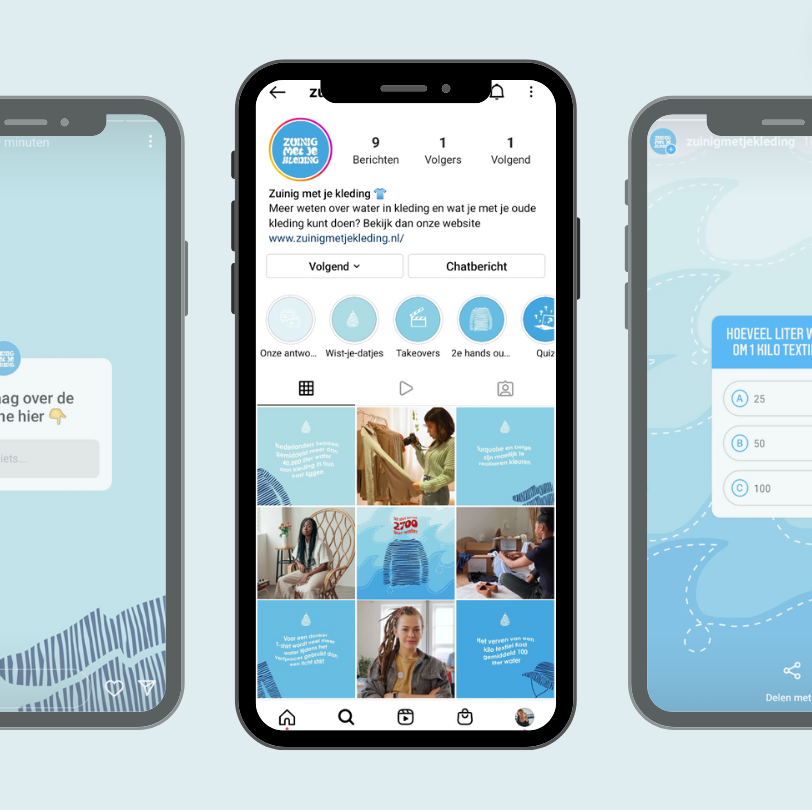

Zuinig met je kleding
Een campagne om jongeren bewuster te maken over het feit dat consuminderen erg belangrijk is. Iedereen moet nu starten met consuminderen en ontspullen, anders is het te laat voor onze planeet. Hierbij is het doel om een aansprekende vormgeving te ontwikkelen om jongeren te overtuigen van de urgentie van deze boodschap.
Ik heb een bewustzijnscampagne opgezet om jongeren bewust te maken van de verborgen impact van hun kledingkeuzes. In deze campagne belicht ik hoeveel water er nodig is om kleding te produceren, van het telen van katoen tot het verven van stoffen. Met deze informatie hoop ik jongeren te inspireren om duurzamere keuzes te maken. Door bewustwording te vergroten, kunnen we samen werken aan een toekomst waarin onze kleding minder impact heeft op het milieu.